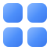
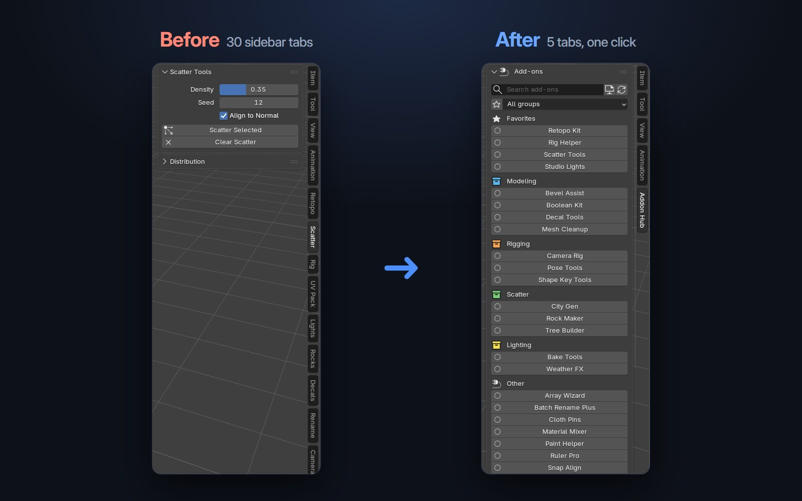
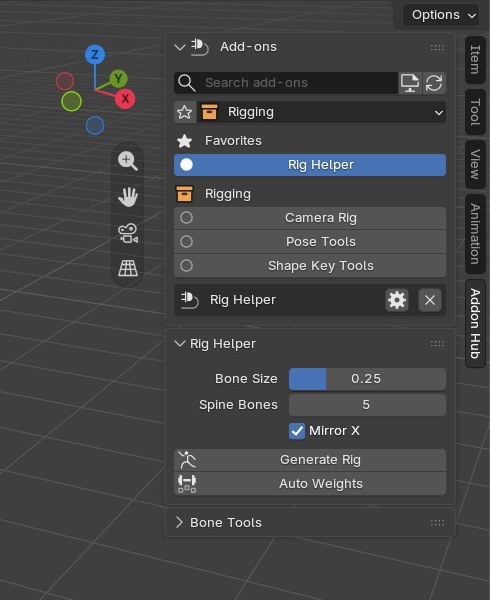
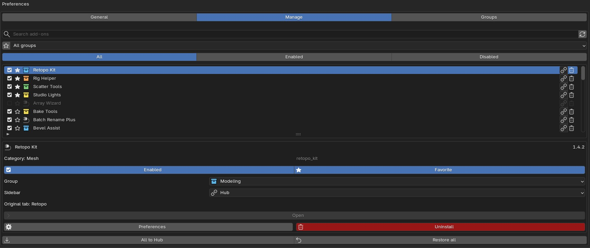

All your add-ons. One place.
Too many add-ons, too many tabs in the N panel? Addon Hub puts every add-on in one searchable launcher and one tidy sidebar tab. Find it, open it, switch it off or uninstall it in a few keystrokes.
Press Ctrl+Alt+N in the 3D Viewport and a custom GPU-drawn launcher opens right over your scene. Start typing, pick a tile, press Enter: the sidebar opens on that add-on.
One click on Send all to Hub takes every add-on out of the tab bar and puts it inside a single Addon Hub tab. Click an add-on there and its own panels appear right below, exactly as they were.
Changed your mind? Restore all brings every tab back. Disabling Addon Hub restores everything too.


Pick a mode per add-on, per group, or for all of them at once.
The add-on keeps its own tab. Nothing changes.
No tab of its own. Pick it in the Addon Hub tab when you need it.
Put several add-ons together in one tab you name, like "Modeling".
Keep the add-on enabled but hide its sidebar panels.
Star the add-ons you use every day: they come first in the launcher and the Hub tab. Put the rest into color-coded groups such as Modeling, Rigging or Lighting.
Every installed add-on and extension in one list: switch it on or off, open its preferences, see its original tab, or delete it from disk with a confirmation.
A fast custom overlay in the viewport. Keys you type never reach your scene.
Every add-on you send to the Hub lives in one tab, opened on demand.
Ctrl+click or right-click any tile. Favorites always come first.
Your own groups, with bulk actions for the whole group.
No internet, no account, no tracking. Nothing to install besides the zip.
Switch the interface language in the add-on preferences.
